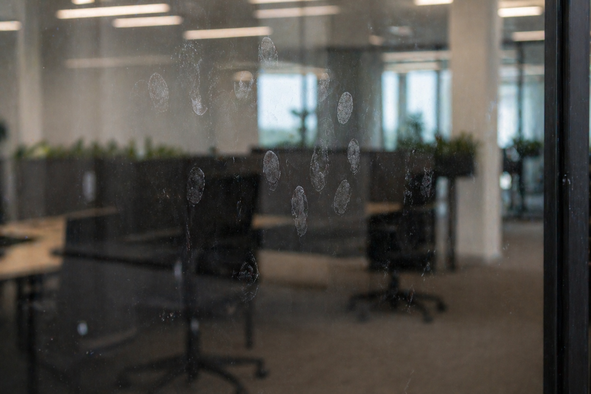
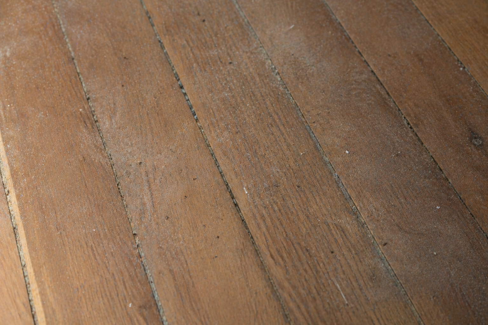
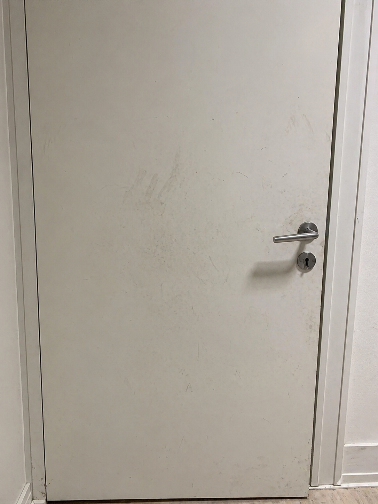
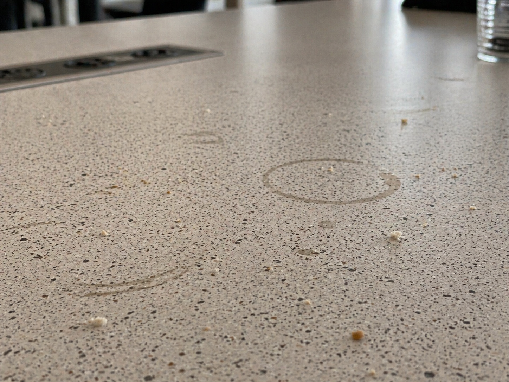

Valg af metode til forskellige materialer
Opgave
Læs situationen. Vælg den arbejdsgang, der passer bedst til overfladen og snavset.
Ordstøtte
Universalmiddel
Bruges til almindeligt snavs på inventar, fx borde, døre og håndtag.
Glasrens
Bruges til glas, spejle og vinduer, når der er fedtede mærker.
Korrekt dosering
Brug den mængde middel, der står på produktets doseringsvejledning.

1. Glas med fingeraftryk
Overflade: glas
Snavs: fedtede fingeraftryk

2. Trægulv med støv og almindeligt snavs
Overflade: behandlet trægulv
Snavs: støv og almindeligt snavs

3. Malet dør med snavs og mærker
Overflade: malet dør
Snavs: fingermærker og almindeligt snavs

4. Laminatbord med krummer og kaffekoprande
Overflade: laminatbord
Snavs: krummer og kaffekoprande
Du har valgt 0 af 4 svar.